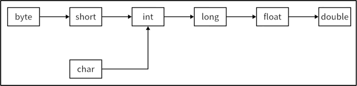

首页 > 编程笔记
Java类型转换（自动类型转换+强制类型转换）
在 Java 中，所有的数值型变量可以相互转换，布尔类型不能与它们进行转换。有两种类型的转换方式：自动类型转换和强制类型转换。
自动类型转换的基本原则如下：当把一个表数范围小的数值或变量直接赋给另一个表数范围大的变量时，系统可以进行自动类型转换。Java 支持的自动类型转换如下图所示，箭头左边的数值类型可以自动转换为箭头右边的数值类型。
需要注意的是，char 型比较特殊，char 型可以自动转换为 int 型、long 型、float 型和 double 型，但 byte 型和 short 型不能自动转换为 char 型，并且 char 型也不能自动转换为 byte 型或 short 型。
例如：
【实例】自动类型转换。
例如，当把一个 int 型常量赋给 byte 型或 short 型变量时，不可以超出这些变量的取值范围，否则必须进行类型转换运算。
强制类型转换的语法格式如下：
【实例】强制类型转换。
1、自动类型转换
自动类型转换就是类型之间的转换是自动的，不需要采取其他手段。自动类型转换的基本原则如下：当把一个表数范围小的数值或变量直接赋给另一个表数范围大的变量时，系统可以进行自动类型转换。Java 支持的自动类型转换如下图所示，箭头左边的数值类型可以自动转换为箭头右边的数值类型。

图 1 Java支持的自动类型转换
图 1 Java支持的自动类型转换
需要注意的是，char 型比较特殊，char 型可以自动转换为 int 型、long 型、float 型和 double 型，但 byte 型和 short 型不能自动转换为 char 型，并且 char 型也不能自动转换为 byte 型或 short 型。
例如：
int x = 20; float y; y = x; // y的值将是20.0 char c = 'a'; // 修正字符的赋值 float z = c; // 将char转换为float，z的值将是97.0 System.out.println(z); // 输出结果为97.0
【实例】自动类型转换。
public class Example {
public static void main(String[] args) {
int a = 100;
// 编译正确，小类型到大类型的自动转换
long b = a;
System.out.println(b); // 输出结果为 100
// 编译正确，int型变量自动转换为double型变量
double c = a;
System.out.println(c); // 输出结果为 100.0
// ① 编译错误，数值类型不兼容，int型不能转换为布尔类型
// boolean e = a;
// ② 编译错误，目标类型小于原类型，不会发生自动类型转换
// byte f = a;
// 输出 "7hello"
System.out.println(2 + 5 + "Hello");
// 输出 “hello25”
System.out.println("Hello" + (2 + 5));
}
}
在程序运行之前先将 ① 处和 ② 处的代码行变成注释行，再运行程序，运行结果为：
100
100.0
7Hello
Hello25
2、强制类型转换
在数值类型转换过程中，除了自动类型转换，还有强制类型转换。强制类型转换是通过在变量或常量之前加上“（目标类型）”实现的，但这种转换可能会导致计算精度下降和数据溢出（Overflow）。例如，当把一个 int 型常量赋给 byte 型或 short 型变量时，不可以超出这些变量的取值范围，否则必须进行类型转换运算。
强制类型转换的语法格式如下：
目标变量类型 目标变量=(目标变量类型)源变量
【实例】强制类型转换。
public class Example {
public static void main(String[] args) {
int i = 100;
// ① 编译错误，大范围不能自动转换为小范围
// byte b = i;
// ② 编译错误，编译器提示"'possible of precision"
// float x = 10.2;
// 编译正确，将int型变量i强制转换为byte型
byte b = (byte) i;
// ③ 128超出byte型表数范围，编译错误
// byte c = 128;
// 强制转换为byte型
byte d = (byte) 128;
// 显示结果为-128，结果失真
System.out.println(d);
long p = 100000000000L;
int k = (int) p;
// 显示结果为1215752192，结果产生了溢出
System.out.println(k);
double t = 3.1415926535897932384;
// 需要进行强制类型转换
float f = (float) t;
// 显示结果为3.1415927，造成精度的损失
System.out.println(f);
}
}
请读者对照注释自行练习上述实例，注意代码中的 ① 处、② 处和 ③ 处会出现编译错误。关注公众号「站长严长生」，在手机上阅读所有教程，随时随地都能学习。内含一款搜索神器，免费下载全网书籍和视频。

微信扫码关注公众号